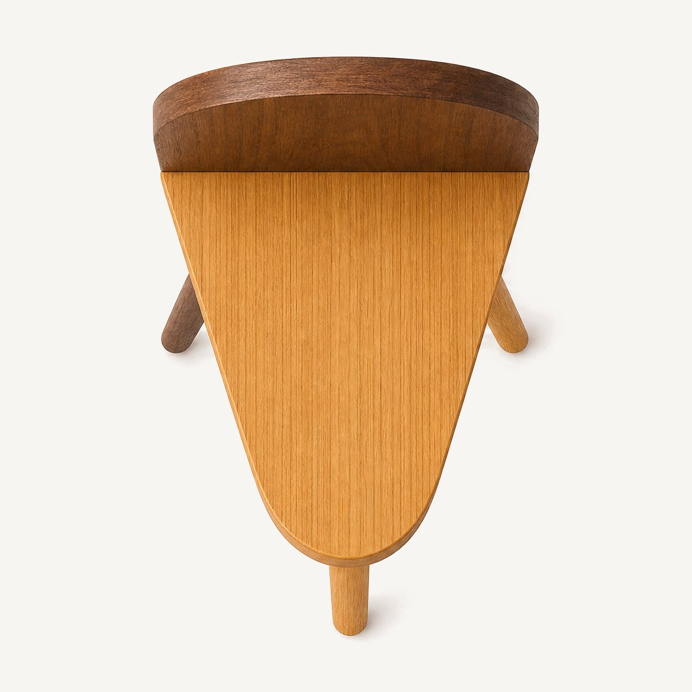

Made to be seen.
Built to be used.


From shape to object
Every piece begins with a single shape. We draw from geometry, then give it warmth, weight and use.
Circle.
- 01ShapeIt starts as one form — a circle.
- 02Top viewThe circle becomes a backrest; a seat and legs follow.
- 03ObjectTotem — walnut and oak.
FPOCircle → Totem top view → render
01 / 03

01 / 03
Triangle.
- 01ShapeIt starts as one form — a triangle.
- 02Top viewThe triangle becomes a seat; a back and three legs follow.
- 03ObjectShard — walnut and oak.
Line.
- 01ShapeIt starts as one form — a line.
- 02Top viewThe line becomes a frame; a seat floats within it.
- 03ObjectFloat — walnut and oak.
FPOLine → Float top view → render
01 / 03

Studio
Grainline is a small furniture studio working the line between design and art.
- ClarityGeometry distilled to its essentials — simple forms, honest craft, precise joinery.
- SculptureEvery piece is both functional and artful, designed to spark conversation.
- WarmthMinimal doesn’t mean cold. Warm woods, tactile finishes, human scale.